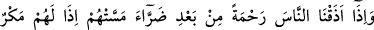
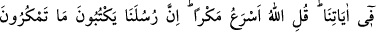
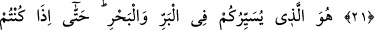
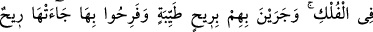
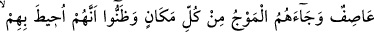
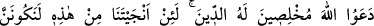
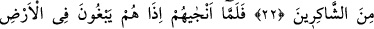
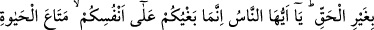
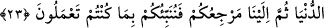

BOLLUKTA VE DARLIKTA
İNSAN
21. İnsanlara dokunan bir sıkıntıdan sonra bir rahmet tattırdığımız zaman hemen
âyetlerimize hile kurarlar. Onlara de ki: “Allah’ın tuzağı daha çabuktur.”
Elçilerimiz kurduğunuz tuzakları hiç şüphesiz yazmaktadırlar.
22. Sizi karada ve denizde gezdiren O’dur. Hatta siz gemilerde bulunduğunuz, o
gemiler de içindekileri tatlı bir rüzgârla alıp götürdükleri ve (yolcular) bu yüzden
neşelendikleri zaman, o gemiye şiddetli bir fırtına gelip çatar, her yerden onlara
dalgalar hücum eder ve onlar çepeçevre kuşatıldıklarını anlarlar da dini yalnız
Allah’a halis kılarak: “Andolsun eğer bizi bundan kurtarırsan mutlaka
şükredenlerden olacağız” diye Allah’a yalvarırlar.
23. Allah onları kurtarınca birde bakarsın ki hemen yeryüzünde haksız yere
taşkınlıklara başlarlar. Ey insanlar, sizin taşkınlığınız kendi aleyhinizedir;
(bununla) sadece fâni dünya hayatının menfaatini elde edersiniz; sonunda
dönüşünüz yine bizedir. Biz de size yapageldiklerinizi bir bir haber vereceğiz.
“İnsanlara” yani Mekkeliler’e “dokunan” kıtlık ve hastalık gibi “bir sıkıntıdan”
başlarına gelen ve kötü te’sirini içlerinde hissettikleri bir sıkıntıya düştükten “sonra bir
rahmet” bolluk ve sıhhat “tattırdığımız zaman hemen âyetlerimize hile kurarlar.”
yani, Allah onlara rahmetini tattırdığı sırada ansızın hile/tuzak kurarlar. Onların
tuzakları, âyetleri kötülemeleri, onları inkâr için çareler aramalarıdır. Daha sıkıntının
tozu dumanı başlarından dağılmadan böyle kötülüğe koşmalarıdır.